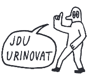
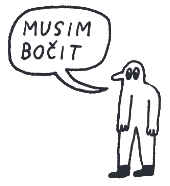
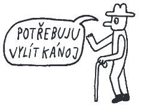
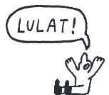
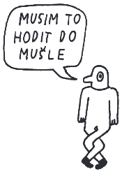

Močení
Co je vlastně močení?
Močení, též zvané urinace nebo mikce, je proces zbavování se moči z močového měchýře přes močovou trubici ven z těla. Proces močení je obvykle ovládán vůlí a má klíčový význam pro udržení vnitřní rovnováhy a odstraňování odpadních látek z těla.
Anatomie močového systému
Močový systém je složen z několika klíčových orgánů: ledvin, močových cest, močového měchýře a močové trubice. Ledviny filtrují krev a produkují moč, která je poté transportována do močového měchýře, kde je uchovávána před vyloučením.
Funkce močení
Močení umožňuje tělu odstranit metabolické odpady a nadbytečné látky rozpuštěné v moči. Jedná se o vysoce regulovaný proces, jehož správné fungování je nezbytné pro zachování homeostázy organismu. To znamená rovnováhu mezi tekutinami, minerály a ostatními látkami.

Regulace močení
Regulace močení je komplexní proces, který zahrnuje neurologické, muskulární a hormonální faktory. Správná funkce močového měchýře a schopnost kontroly močového svěrače jsou klíčové pro vůlí řízené močení bez úniků a jiných komplikací.
Poruchy močení
Poruchy močení mohou být důsledkem řady stavů, včetně infekcí, strukturních abnormalit, neurologických onemocnění nebo stárnutí. Tyto problémy mohou vést k inkontinenci, infekcím močových cest nebo jiným komplikacím.

Inkontinence
Inkontinence, neboli neschopnost udržet moč, může mít mnoho podob od mírného úniku moči po úplnou ztrátu kontroly nad močením. Je to běžný problém, který může významně ovlivnit kvalitu života. Léčba se liší podle typu a příčiny inkontinence a může zahrnovat fyzioterapii, léky nebo chirurgické zákroky. V současné době je dostupná velká škála inkontinenčních pomůcek, které tento stav pomáhají zvládat.
Hygiena močení
Důležitou součástí prevence infekcí močových cest je správná hygiena močení. Základem je dostatečný příjem tekutin, pravidelné močení a u žen správné otírání od předu dozadu po vykonání potřeby, aby se zabránilo zanesení bakterií do močových nebo pohlavních cest.

Zajímavosti
Močení může odhalit mnoho o našem zdraví. Barva, konzistence a četnost močení jsou důležitými indikátory, které mohou signalizovat různé zdravotní stavy od dehydratace po vážná onemocnění jako je diabetes.
• Žlutá moč: normální barva zdravé moči. Pokud je žlutá barva výrazná, většinou to
znamená zvýšený příjem
vitamínů B, což není zdraví škodlivé.
• Bezbarvá moč: značí nadměrný příjem tekutin, což zatěžuje ledviny. Pokud víte, že
pijete tak akorát a stejně
máte moč průhlednou, kontaktujte lékaře, aby vyloučil onemocnění jater.
• Růžová nebo červená moč: v tomto případě se ihned nechte vyšetřit lékařem, znamená
to, že se ve vaší moči
nachází krev. Na vině bývají typicky problémy s prostatou nebo močové kameny. Je ale možné, že jste
konzumovali velké
množství rebarbory, řepy nebo borůvek.
• Oranžová moč: příčinou je většinou dehydratace. V některých případech však může
signalizovat poruchy jater
nebo žlučníku.
• Hnědá moč: způsobená buď vážnou dehydratací, užíváním některých léků, onemocněním
jater nebo poruchou
červených krvinek.
Závěr
Proces močení je komplikovaný a důležitý pro naše zdraví. Ačkoliv se jedná o každodenní aktivitu, nad kterou nijak nepřemýšlíte, má řadu dopadů na život a vaši pohodu. Je důležité být vědom si možných problémů a zachovávat dobré močové zdraví a hygienu.
Zdroj: pilulka.cz